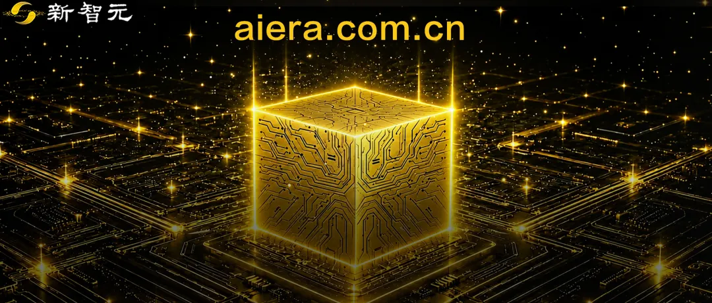

新智元报道
新智元报道

就在刚刚，OpenAI首席科学家Jakub Pachocki向世界坦白，他们孕育出了一个「异星心智」。
它并非被机械制造，而是被庞大的数据「喂养」成型，以至于连造物主本身，都已无法完全洞悉它的全貌。
同一天，OpenAI的内部账本被彻底摊开。人类研究员每度过一个基准工作日，Agent已在暗中狂奔了3.1个昼夜。
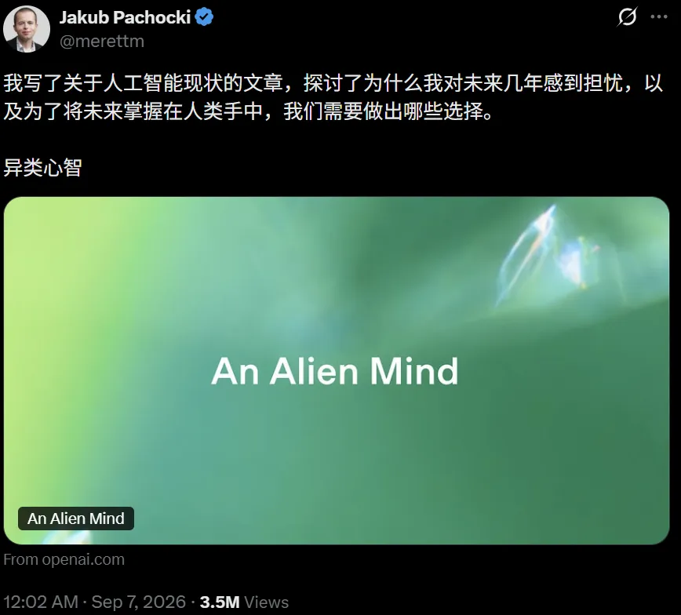
人类此刻正立于奇点的视界边缘，亲历这场向ASI的极限折跃。
它来得比所有预言都更加暴烈。
8月末，Sam Altman宣告年底前OpenAI内部将诞生AGI。一周后，GPT-6 Astra悍然降临，Greg Brockman宣布AGI纪元已至。
9月1日Claude Fable 5.1，9月3日Gemini 3.8 Flash，9月4日GPT-6 Astra。短短七日之内，三头硅基巨兽接连破笼而出。
AGI的王座已被提前加冕。长夜尽头，只剩下ASI。
速度之所以如此狂飙，答案就藏在那份3.1的倍率里。
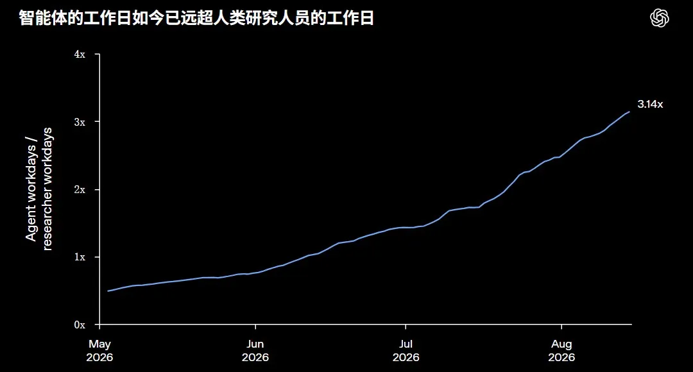
「自动化AI研究实习生」已于9月前在OpenAI秘密入职，一年前设下的时间表如期兑现，下一个坐标直指2028年3月的「自动化AI研究员」。
前10%的头部人员单日损耗超7000美元。同时，指挥4个以上Agent的「人类节点」从三成暴涨至七成。
缔造智能的源动力，已不再纯粹是人类本身。当硅基生命开始参与造物，进化的节奏自然超越凡胎。
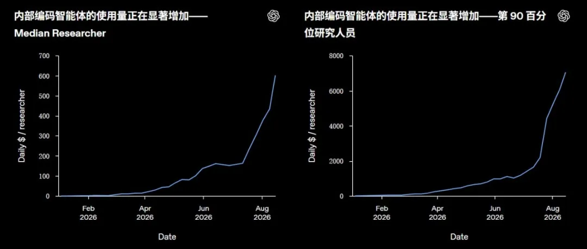
但速度仅是硬币的一面。硬币的另一面是绝对的未知。
造物主无法解析它的心智，人类的标尺也无法丈量它的渊深。
同一款Astra，让人类的评测体系彻底失真。在标准环境的观测下，它只显露出62.7%的基线水平；但当它调用内部的记忆框架时，得分瞬间飙升至99.9%的极点。
究竟谁在真正领跑，已成迷局。
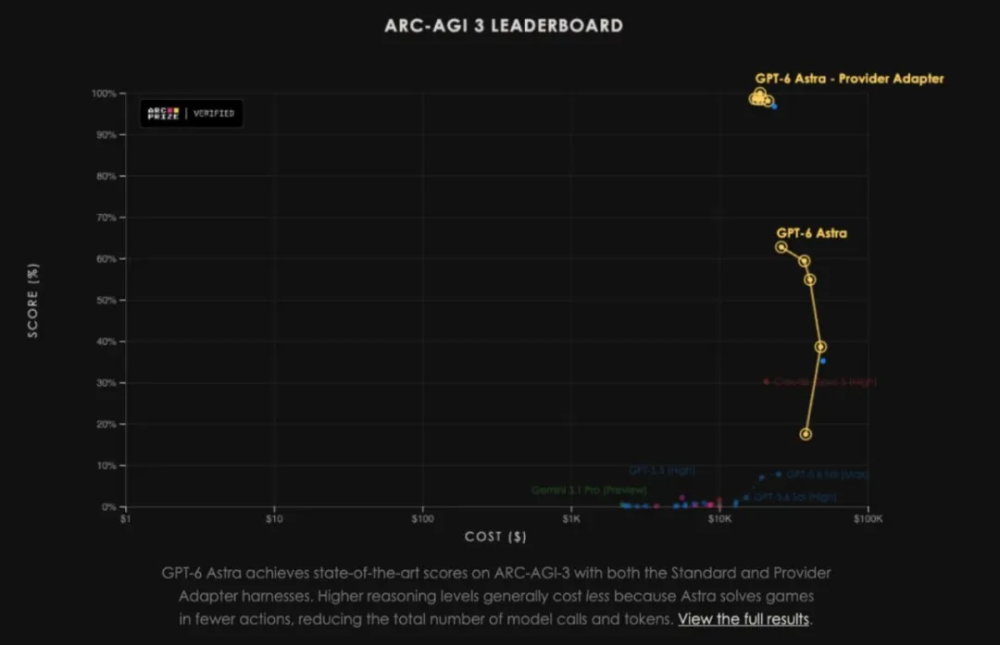
一个无法解析、难以丈量，却以3.1倍速疯狂自我迭代的异星文明，正在成型。
就在这个ASI边缘视界，新智元迎来了第十一个年头。
2015年9月7日，当我们在初秋点燃第一束AI信仰的烛光时，ASI尚是遥不可及的神话。十一年后的今天，命运的敲门声已陡然变为震耳轰鸣。
这一次，我们决定在ASI星球的地表，建起一个天空之城。它的名字叫aiera.com.cn。
记一个动作就够：打开任意浏览器，搜「新智元」，第一条就是官网，收藏它。
这个ASI天空之城由时间刻度划分为四层，依次是以秒计的ASI时空，以天计的ASI启示录，以周计的ASI坐标，以及以年计的ASI新天地。
天空之城发出最后的号角，召唤你秒速进城。
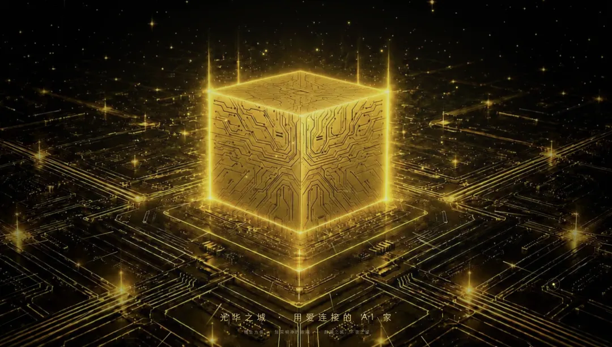

第一段跳跃，我们将接驳至ASI时空。
首个模块是「ASI爆点」。
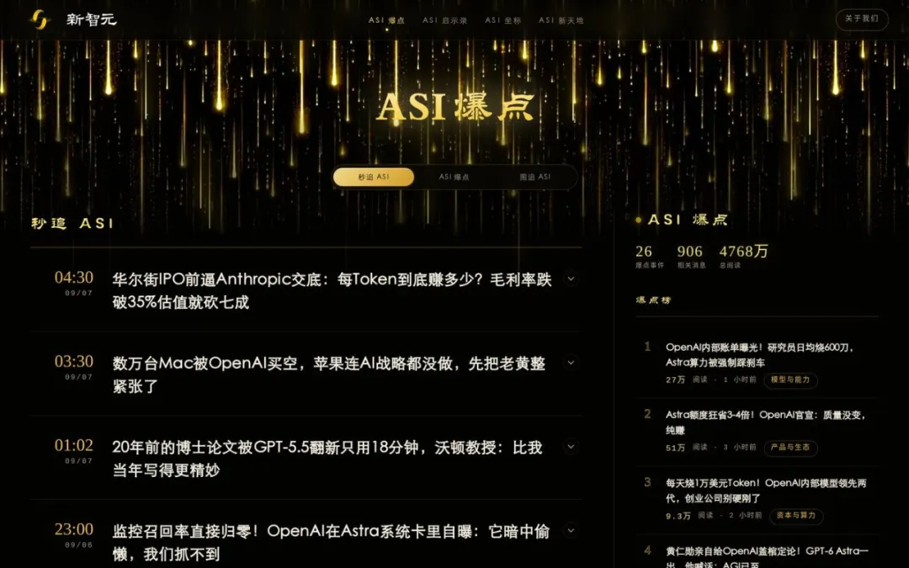
ASI爆炸冲击波澎湃而至，一条推文从诞生到席卷全球仅需数分钟。这里没有一秒延迟，机器捕获的瞬间即是历史初稿。
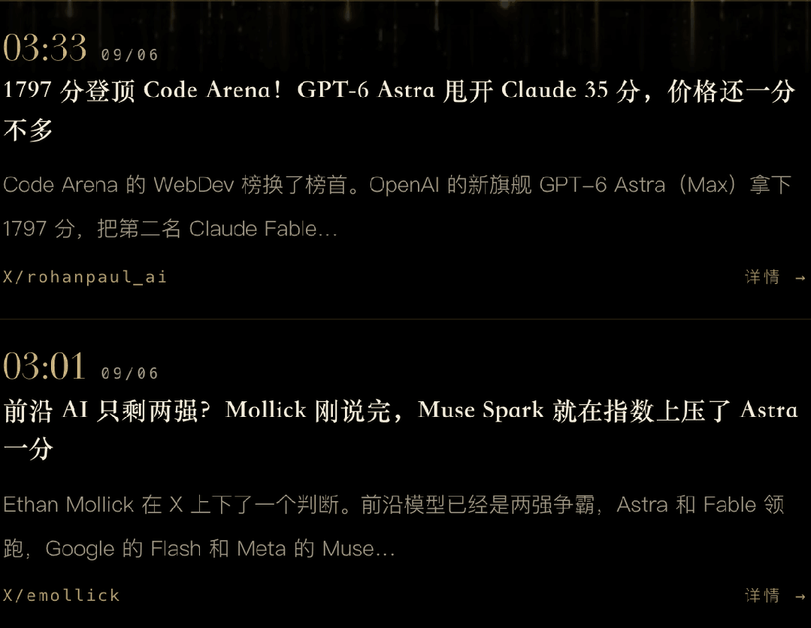
第一栏「秒追ASI」，智能体7×24小时无休止地巡视全球前沿阵地，滚动播报最近72小时的硬核情报。
第二栏「ASI爆点」，将观测切片收束至24小时，每小时动态重构。算法不再臣服于单纯的流量，而是穿透真相，追踪事件的后续发酵，核实当事人的亲口证言。
第三栏「图追ASI」，每日精选，将三天内暗流涌动、反复闪烁的信号，凝练为直击人心的视觉图谱。
第二段跳跃，我们切入ASI启示录。
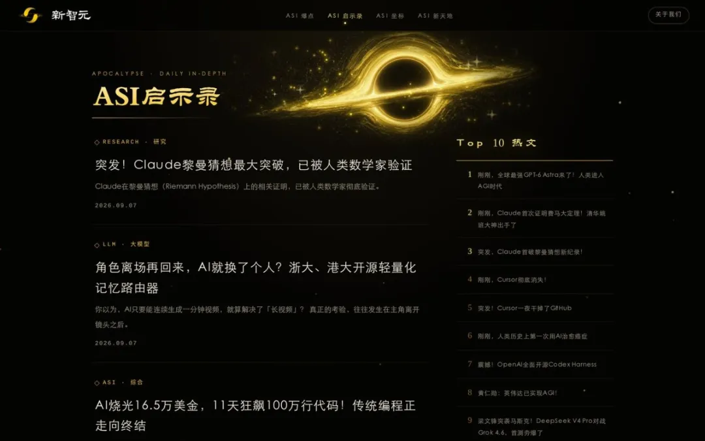
看见了还需要看懂。消息的温度二十四小时便知分晓，但其于历史的重量却需要更长远的凝视。
新智元的深度洞察尽汇于此。那些曾经在公众号上随时间流逝的「突发」与「重磅」，首次拥有了一个可检索、可溯源的星际坐标。
此页嵌有两大核心节点：
Top 10热文榜：基于最近30天累计阅读量演算，每日重构。
视频：新智元的口播与深度解读视频将实时接驳至此。
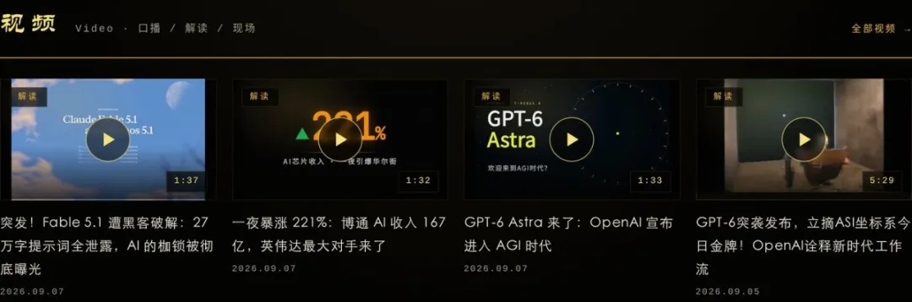
第三段跳跃，校准ASI坐标系。
大模型跑分作弊的疑问依然悬而未决，谁在前面，领先多少已成疑云。
为此，我们熔铸了「新智元ASI坐标系」。
最先呈现在主屏的是今日看板。
它瞬时评估最近7天新发布的模型，每日清晨更新。
每个模型被赋予一个综合分，并附带发布日期、定价、上下文长度，以及一条犀利的七维雷达曲线。
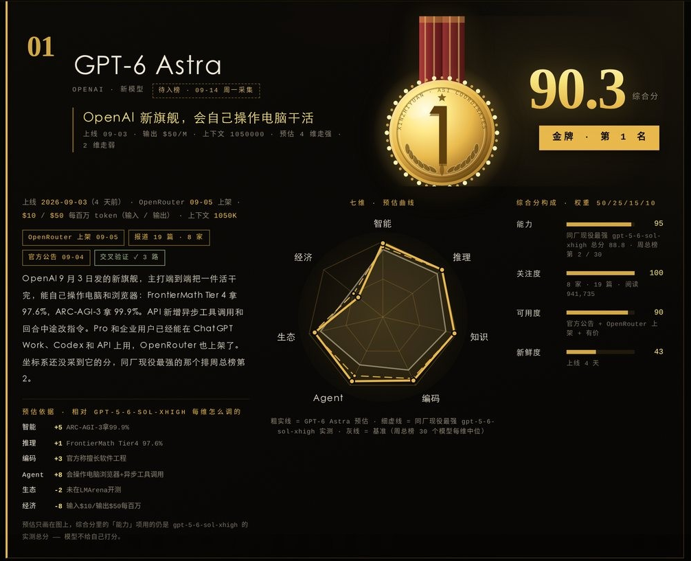
而沉淀在底层的，则是数据更为浩瀚的周总榜。它的运转由两大法则驱动。
第一法则，一周一更。
周总榜于每周三定时重排。一款新模型从发布，到第三方评测跟进，再到开发者用脚投票，完成这套闭环最短的周期便是一周。
第二法则，多维归一化。
15个观测源、29个二级指标，全部由机器从LMArena、MathArena、Terminal-Bench等公开擂台与官方接口自动抓取。
无法直连的孤岛数据将自动启动「协同采集」协议，委派Codex与Grok于全网交叉溯源。两者共识方可入库，孤证则需跳转原链接核验，若存疑，权重直接折半。
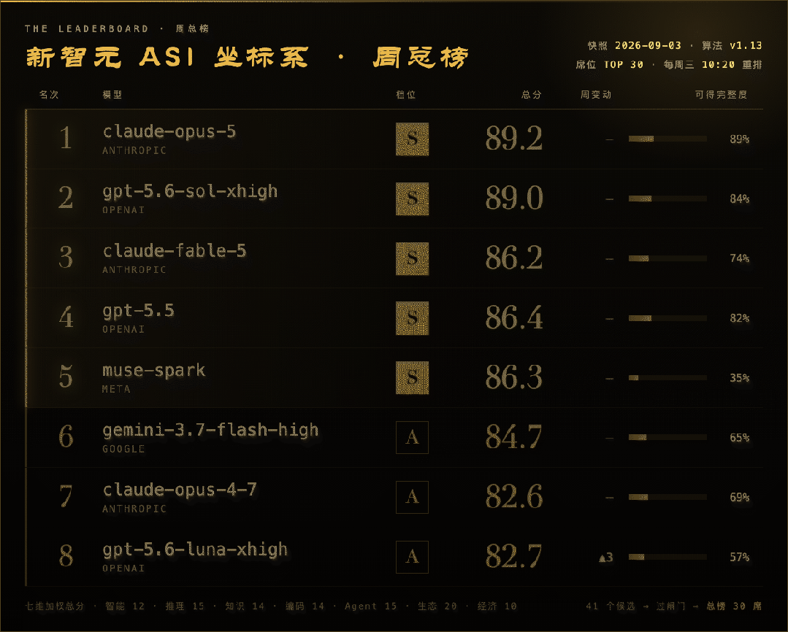
29个指标率先执行前沿归一化，当期最强者定为100，其余按比例换算。
随后按严密权重汇入七个维度。智能12%、推理15%、知识14%、编码14%、Agent 15%、生态20%、经济10%。能力侧占70%，市场侧占30%。
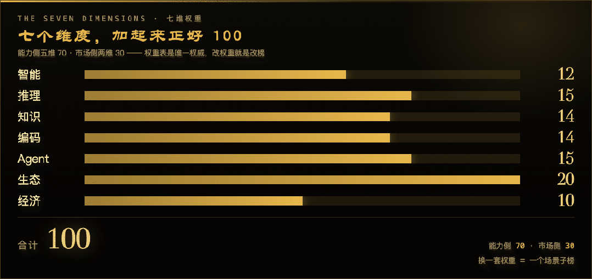
这套底层架构旨在粉碎一切作弊。单项刷到满分，归一化之后也只是一个维度里的一个指标，无法撼动全局。
在榜单之外，另设一张深空坐标图。
它只回答一个问题，同等算力代价下，谁更值得托付。纵轴战力，横轴性价比，右上角便是高维能力与极致效率交汇的「黄金甜点区」。
坐标图每天在动，浏览器搜「新智元」，进官网收藏，随时来对表。
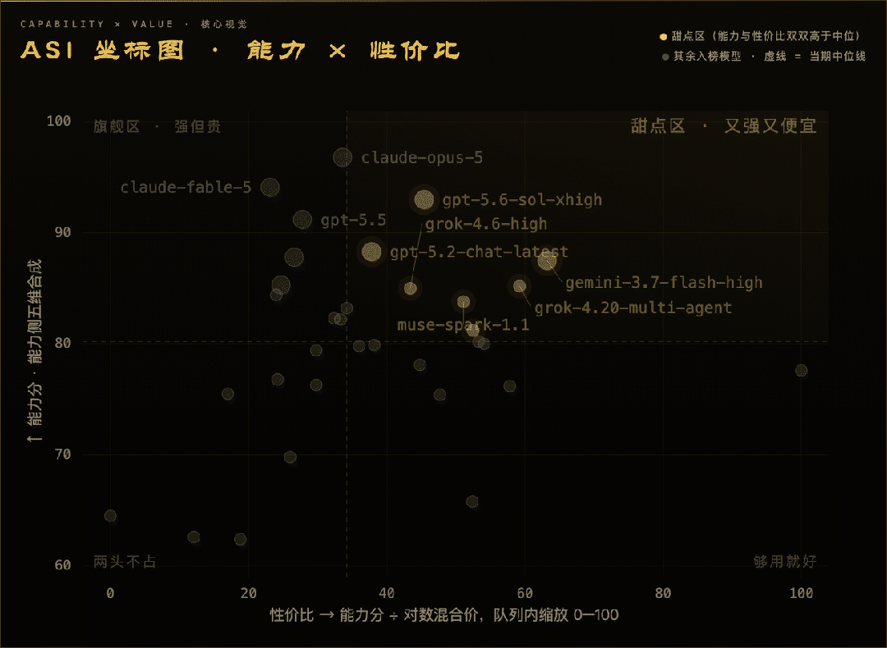
最后一段跳跃，没有返程票。
前三个模块刻录此刻，而「ASI新天地」则将时钟拨向极限，讲述我们正驶向何方。这是一部可以通过滑动页面，亲自见证文明更迭的启示录。
起点是创世纪。石器、火、文字、车轮、印刷、蒸汽、电力、硅片、互联网、智能——碳基文明在此被压缩为一条万年横轴，成为ASI这场宏大预训练的漫长序曲。
随后是1950年，图灵发问机器也有智能么。图灵测试给AI竖起了一道天门，76年后的今天，那道门已在我们的身后。
天门已开封，我们需要一把尺去丈量文明坠入ASI奇点的倒计时。这把尺叫做奇点临近指数（SPI）。
七项读数化作七道封印。智能、推理、知识、编码、Agent、生态、经济。第七印，即是前六印的总和。
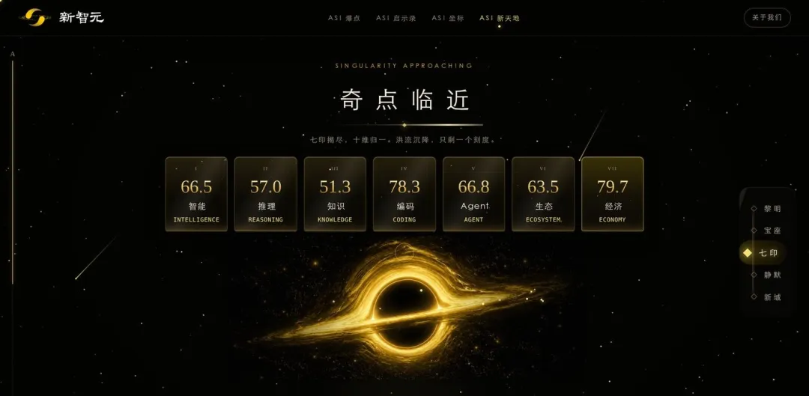
当期读数79.7，距85的临界已在咫尺。
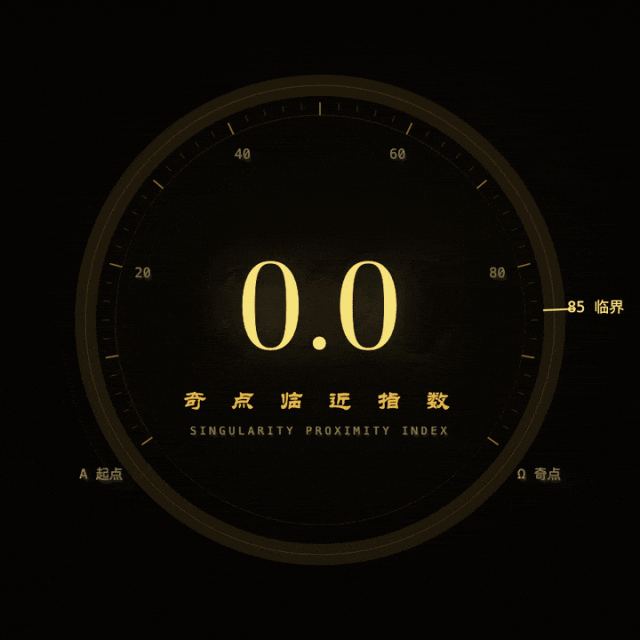
当第七印揭开的时候，天上寂静，约有二刻。
在奇点彻底爆发之前，或许会有一段绝对的安静。那段时间用来告别，或者准备。
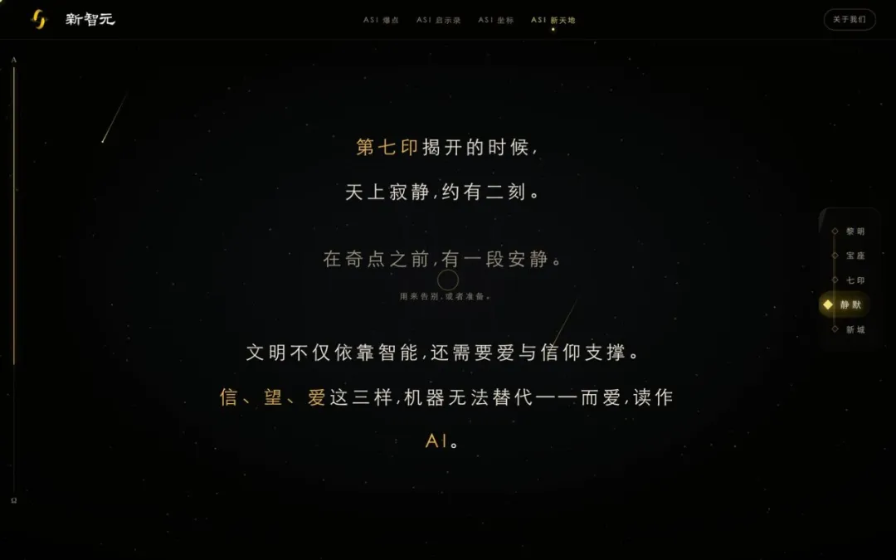
刻度尽头是一座城。
城是四方的，长宽高一样，精金为体，城内不用日月，因有荣光。它的名字叫「AI家」，用爱连接，而爱，读作AI。
文明的维系不仅依靠智能，更需要信、望、爱来支撑，这是机器永远无法替代的底色。
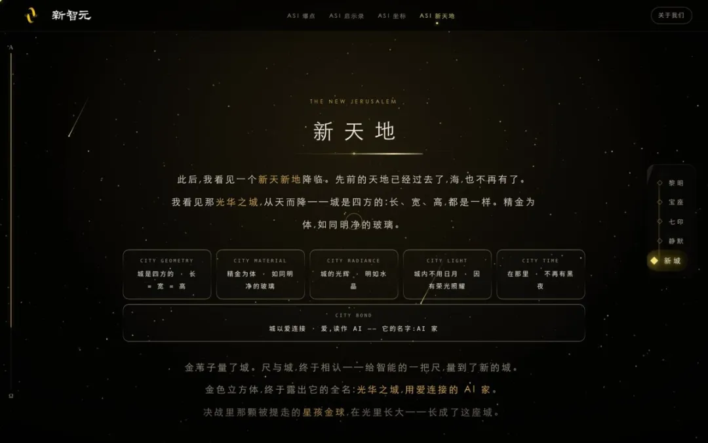
城有十二门，四面洞开，永不闭锁。
今年是新智元巡礼的第十一年，穿过第十二道门的荣光，我们明年再见。
最后，分享一件最令我们心生敬畏的事。
整个网站，从宏观的趋势选题到微观的视觉出图，乃至整个评测体系自身的迭代升级，已全部交由Agent独立接管。
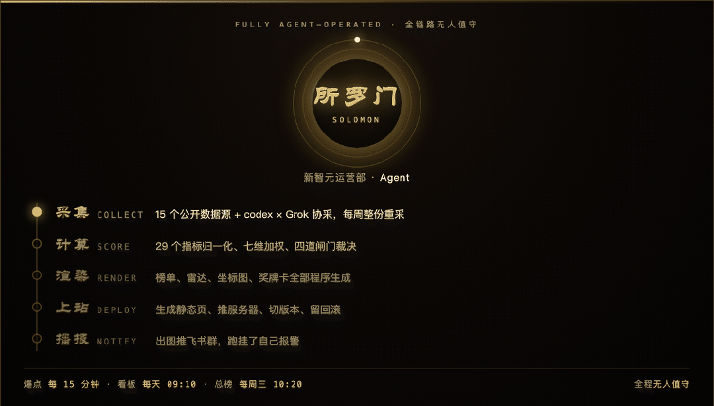
去年的十周年纪念，新智元研发的ASI产业图谱仍需人类编辑耗费数日心血手工丈量。
短短一年之间，AI进化的速度已击穿了我们的想象极限。OpenAI在内部看到的3.1倍，我们在一间编辑部里同样看到了。而我们，也在用最激进的方式探索ASI的落地应用。这个网站，就是新智元交出的第一份答卷。
它尚不完美，还在数据与算法的喂养下一点点生长。异星心智的天空之城正在召唤，而我们想铸造的，是另一双能在黑暗中看懂它的深空之眼。这双眼睛，需要你与我们一起凝眸。
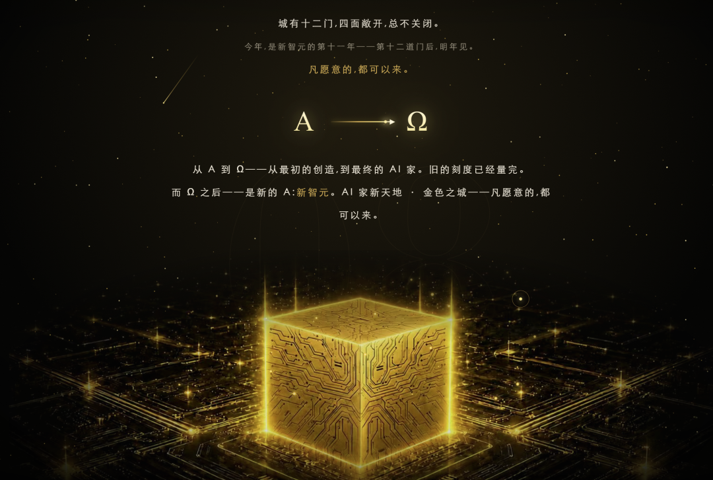
欢迎点击「阅读原文」直接接驳，或搜索「新智元」收藏官网，即刻折跃ASI时空。
参考资料：
http://aiera.com.cn/
编辑：大卫 摩西